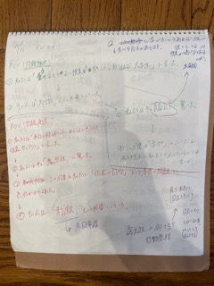
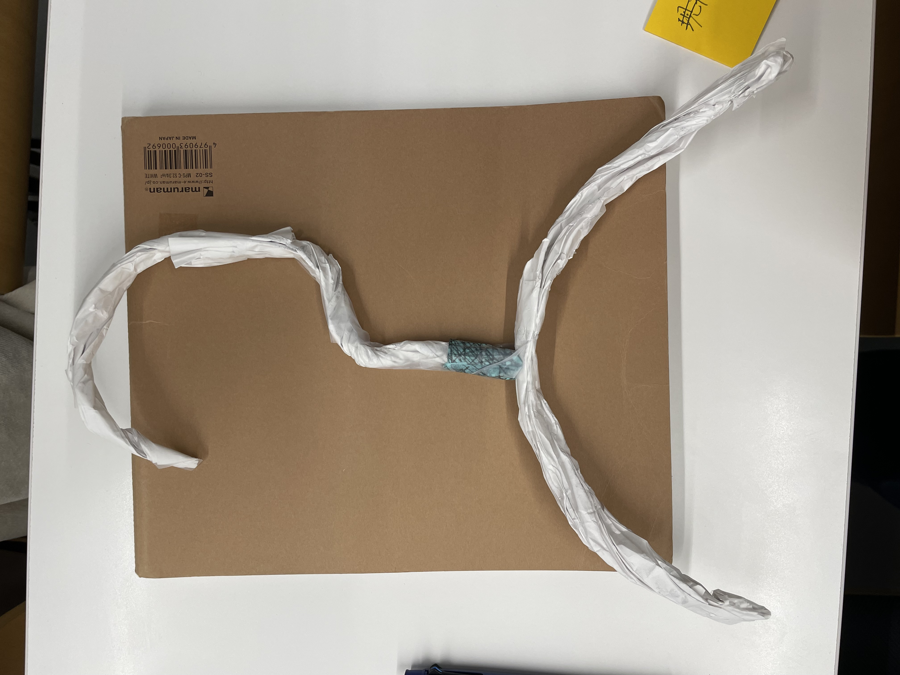
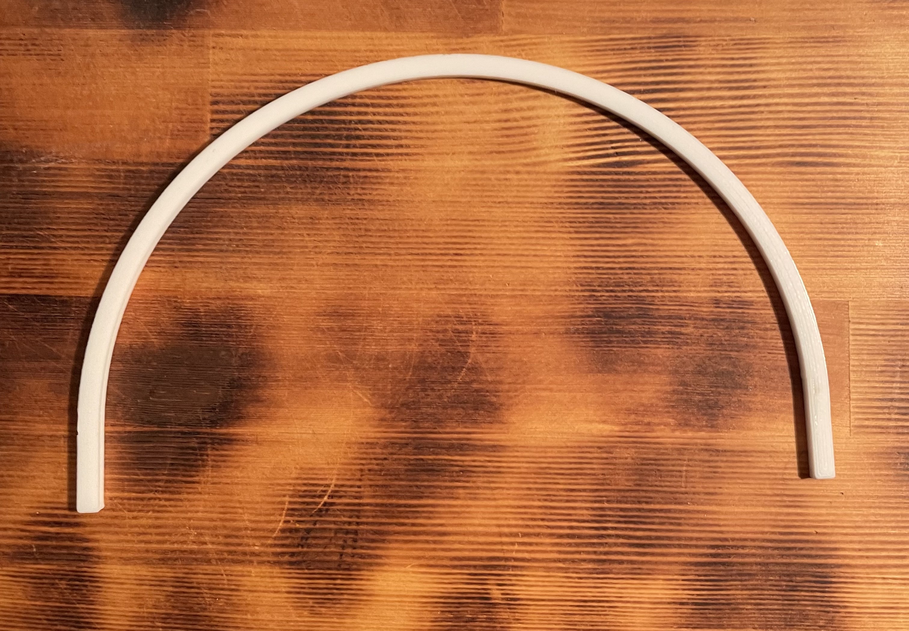
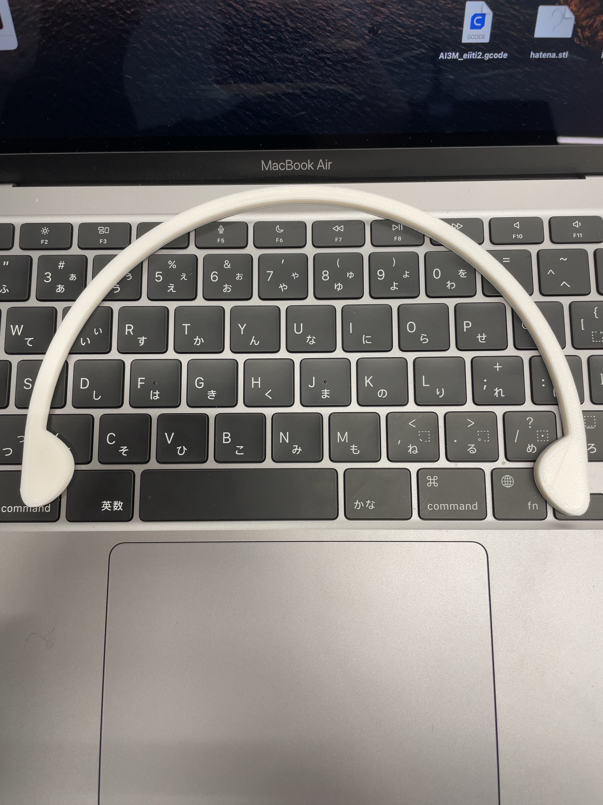
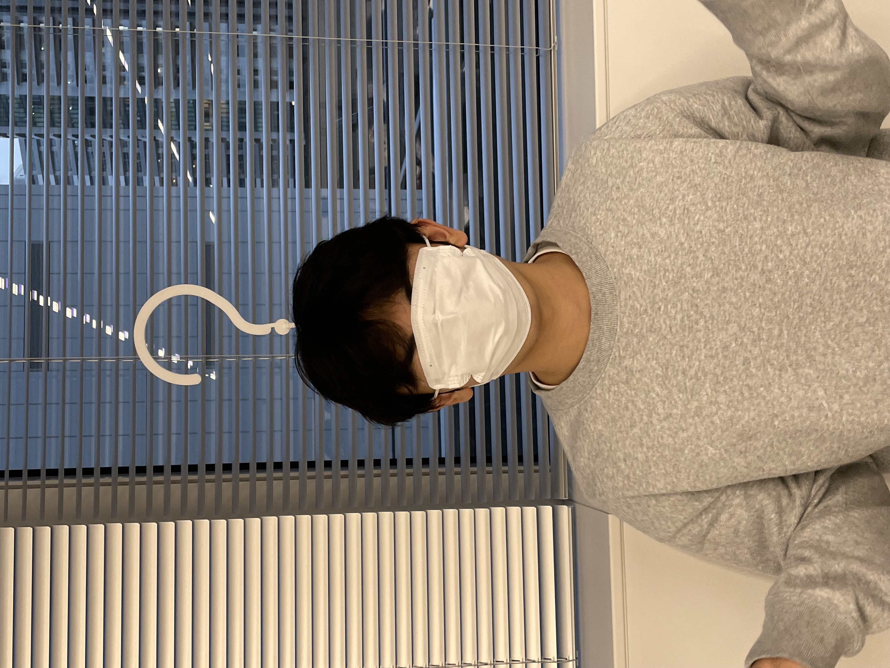
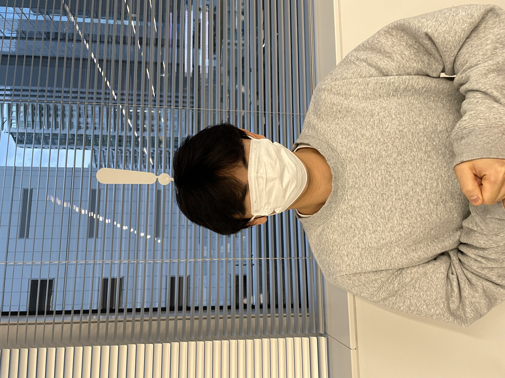

制作
作成するきっかけ
観察課題から授業を真面目に受ける者が
より学びやすくなるモノ
を考えた。
POV(緑字)

ここから考えたことが、
講師側に受講する者の疑問を可視化する
こと。
その役割を果たす作品を制作した。
最初のプロトタイプ

紙で即興で作ったもの。最初にひらめいたこの形をもとに制作した。
最初のカチューシャ部分
カチューシャの上に接続？できる者であればよかったため、最初はカチューシャ部分の制作に取り組んだ。

この形では装着することができず、落ちてしまう。そのためこめかみ部分に出っ張りを作ることで
装着感の高いカチューシャに。

カチューシャ部分の完成品：stlファイル
サイズ感が偶然に一回の作成で見事にフィットする大きさになり感動した。
完成品

色が白のため、教室と同化してしまい
可視化する
目的が達成されにくい反省点があるが、
形としては理想的なものを制作できた。
使用機材
・3Dプリンター
班員のデジファブのページリンク
小松琥珀
イシヅカアヤネ
KAHO
リコ
おまけ
びっくりマークを作り、生徒の
ひらめき、理解
を講師側が見える物を作成。

前ページ